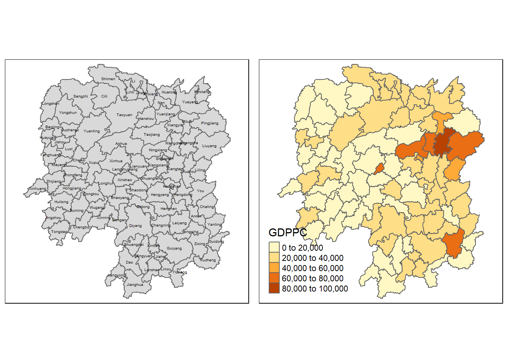
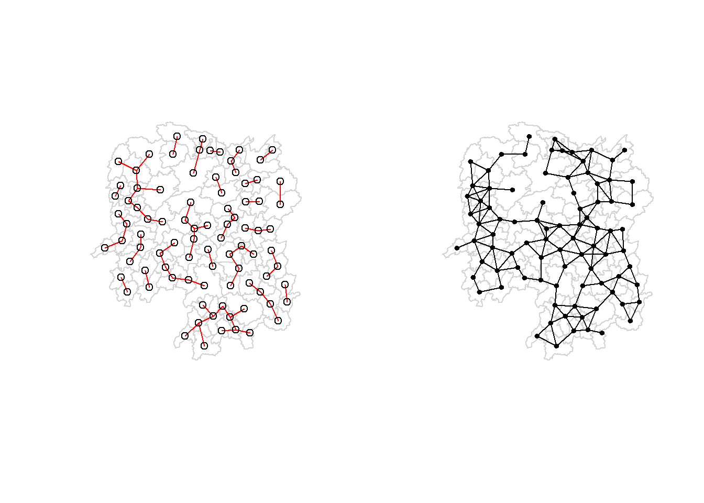

pacman::p_load(sf, spdep, tmap, tidyverse, knitr)Hands-on Exercise 6: Spatial Weights and Application
1 Setting Up
1.1 Installing and Loading Packages
1.2 Importing Data
1.2.1 Hunan Shapefile
hunan <- st_read(
dsn = "data/geospatial",
layer = "Hunan"
)Reading layer `Hunan' from data source
`D:\bellekwang\IS415\handson_ex\HE6\data\geospatial' using driver `ESRI Shapefile'
Simple feature collection with 88 features and 7 fields
Geometry type: POLYGON
Dimension: XY
Bounding box: xmin: 108.7831 ymin: 24.6342 xmax: 114.2544 ymax: 30.12812
Geodetic CRS: WGS 84hunan is a POLYGON sf data frame with 88 features
Hunan is located in Central China which uses a CRS of WGS 84 (?)
1.2.2 Hunan 2012 Development Indicator
hunan2012 <- read_csv("data/aspatial/Hunan_2012.csv")1.3 Relational Joint
Using the left_join() function of dplyr package, combine hunan2012 to hunan sf data frame.
Using the select() function, pick out columns:
hunan <- left_join(hunan, hunan2012) %>%
select(1:4, 7, 15)2 Visualising Regional Development Indicator
Using qtm() function from tmap, create a basemap and a choropleth map, showing the distribution of GDPPC 2012.
basemap <- tm_shape(hunan) +
tm_polygons() +
tm_text("NAME_3", size = 0.3)
gdppc <- qtm(hunan, "GDPPC")
tmap_arrange(basemap, gdppc, asp = 1, ncol = 2)
3 Computing Contiguity Spatial Weights
- poly2nb() from spdep package
3.1 Computing Queen contiguity based neighbours
wm_q <- poly2nb(hunan, queen = TRUE)
summary(wm_q)Neighbour list object:
Number of regions: 88
Number of nonzero links: 448
Percentage nonzero weights: 5.785124
Average number of links: 5.090909
Link number distribution:
1 2 3 4 5 6 7 8 9 11
2 2 12 16 24 14 11 4 2 1
2 least connected regions:
30 65 with 1 link
1 most connected region:
85 with 11 linksThe most connected area unit has 11 neighbours
There are 2 area units with only one neighbour
To check the neighbours of one area unit:
wm_q[[1]][1] 2 3 4 57 85- Polygon 1 has 5 neighbours
To check the country name of area unit 1:
hunan$County[1][1] "Anxiang"To check the country names of the 5 neighbours:
hunan$NAME_3[c(2, 3, 4, 57, 85)][1] "Hanshou" "Jinshi" "Li" "Nan" "Taoyuan"To retrieve the GDPPC of the 5 neighbour countries:
nb1 <- wm_q[[1]]
nb1 <- hunan$GDPPC[nb1]
nb1[1] 20981 34592 24473 21311 228793.2 Creating Rook Contiguity Based Neighbours
Using poly2nb() function, when queen = FALSE, rook’s case will be used.
wm_r <- poly2nb(hunan, queen = FALSE)
summary(wm_r)Neighbour list object:
Number of regions: 88
Number of nonzero links: 440
Percentage nonzero weights: 5.681818
Average number of links: 5
Link number distribution:
1 2 3 4 5 6 7 8 9 10
2 2 12 20 21 14 11 3 2 1
2 least connected regions:
30 65 with 1 link
1 most connected region:
85 with 10 linksmost connected area unit has 10 neighbours, 1 less than that of queen’s case
2 area unit has only one neighbour, same as that of queen’s case
3.3 Visualising Contiguity Weights
Connectivity graph: takes a point and displays a line to each neighbouring point
- for polygons: need to get points before creating the graph (use centroids: latitude and longitude)
3.3.1 Calculating Centroids
To get the longitude:
longitude <- map_dbl(hunan$geometry, ~st_centroid(.x)[[1]])To get the latitude:
latitude <- map_dbl(hunan$geometry, ~st_centroid(.x)[[2]])Combing the latitude and longitude into one object:
coords <- cbind(longitude, latitude)head(coords) longitude latitude
[1,] 112.1531 29.44362
[2,] 112.0372 28.86489
[3,] 111.8917 29.47107
[4,] 111.7031 29.74499
[5,] 111.6138 29.49258
[6,] 111.0341 29.798633.3.2 Plotting Queen Contiguity Based Neighbours Map
Plot the geometry boundary before the points and lines.
plot(hunan$geometry, border = "lightgrey")
plot(wm_q, coords, pch = 19, cex = 0.6, add = TRUE, col = "red")
add = TRUE: Add to a previous plotpch: option to specify symbols for plotting pointscex: amount by which plotting text and symbols should be scaled relative to the default
3.3.3 Plotting Rook Contiguity Based Neighbours Map
plot(hunan$geometry, border = "lightgrey")
plot(wm_r, coords, pch = 19, cex = 0.6, add = TRUE, col = "red")
3.3.4 Plotting Both Maps
par(mfrow=c(1,2))
plot(hunan$geometry, border="lightgrey")
plot(wm_q, coords, pch = 19, cex = 0.6, add = TRUE, col= "red", main="Queen Contiguity")
plot(hunan$geometry, border="lightgrey")
plot(wm_r, coords, pch = 19, cex = 0.6, add = TRUE, col = "red", main="Rook Contiguity")
4 Computing Distance Based Neighbours
dnearneigh()from spdep: identifies neighbours of region points by euclidean distancebounds: lower d1 and upper d2
unit: km
4.1 Calculating Cut-off Distance
Cut-off distance: upper limit for distance band
First, using knearneigh() of spdep, calculate a matrix of indices of points of the k nearest neighbours.
At the same time, using knn2nb(), convert the knn object into a nb list (vectors containing neighbour ids).
k1 <- knn2nb(knearneigh(coords))Next, calculate the length of neighbour relationship edges using nbdists() and remove the list structure using unlist().
k1dists <- unlist(nbdists(k1, coords, longlat = TRUE))
summary(k1dists) Min. 1st Qu. Median Mean 3rd Qu. Max.
24.79 32.57 38.01 39.07 44.52 61.79 Largest first nearest neighbour distance = 61.79km
Upper threshold = 61.79km, anything below this distance will guarantee at least 1 neighbour
4.2 Calculating Fixed Distance Weight Matrix
Using dnearneigh() function, calculate the weight matrix with an upper limit of 62km.
wm_d62 <- dnearneigh(coords, 0, 62, longlat = TRUE)
wm_d62Neighbour list object:
Number of regions: 88
Number of nonzero links: 324
Percentage nonzero weights: 4.183884
Average number of links: 3.681818 - Each polygon has an average of 3.68 links.
To display the matrix, use the table() and card() functions from spdep.
table(hunan$County, card(wm_d62))
1 2 3 4 5 6
Anhua 1 0 0 0 0 0
Anren 0 0 0 1 0 0
Anxiang 0 0 0 0 1 0
Baojing 0 0 0 0 1 0
Chaling 0 0 1 0 0 0
Changning 0 0 1 0 0 0
Changsha 0 0 0 1 0 0
Chengbu 0 1 0 0 0 0
Chenxi 0 0 0 1 0 0
Cili 0 1 0 0 0 0
Dao 0 0 0 1 0 0
Dongan 0 0 1 0 0 0
Dongkou 0 0 0 1 0 0
Fenghuang 0 0 0 1 0 0
Guidong 0 0 1 0 0 0
Guiyang 0 0 0 1 0 0
Guzhang 0 0 0 0 0 1
Hanshou 0 0 0 1 0 0
Hengdong 0 0 0 0 1 0
Hengnan 0 0 0 0 1 0
Hengshan 0 0 0 0 0 1
Hengyang 0 0 0 0 0 1
Hongjiang 0 0 0 0 1 0
Huarong 0 0 0 1 0 0
Huayuan 0 0 0 1 0 0
Huitong 0 0 0 1 0 0
Jiahe 0 0 0 0 1 0
Jianghua 0 0 1 0 0 0
Jiangyong 0 1 0 0 0 0
Jingzhou 0 1 0 0 0 0
Jinshi 0 0 0 1 0 0
Jishou 0 0 0 0 0 1
Lanshan 0 0 0 1 0 0
Leiyang 0 0 0 1 0 0
Lengshuijiang 0 0 1 0 0 0
Li 0 0 1 0 0 0
Lianyuan 0 0 0 0 1 0
Liling 0 1 0 0 0 0
Linli 0 0 0 1 0 0
Linwu 0 0 0 1 0 0
Linxiang 1 0 0 0 0 0
Liuyang 0 1 0 0 0 0
Longhui 0 0 1 0 0 0
Longshan 0 1 0 0 0 0
Luxi 0 0 0 0 1 0
Mayang 0 0 0 0 0 1
Miluo 0 0 0 0 1 0
Nan 0 0 0 0 1 0
Ningxiang 0 0 0 1 0 0
Ningyuan 0 0 0 0 1 0
Pingjiang 0 1 0 0 0 0
Qidong 0 0 1 0 0 0
Qiyang 0 0 1 0 0 0
Rucheng 0 1 0 0 0 0
Sangzhi 0 1 0 0 0 0
Shaodong 0 0 0 0 1 0
Shaoshan 0 0 0 0 1 0
Shaoyang 0 0 0 1 0 0
Shimen 1 0 0 0 0 0
Shuangfeng 0 0 0 0 0 1
Shuangpai 0 0 0 1 0 0
Suining 0 0 0 0 1 0
Taojiang 0 1 0 0 0 0
Taoyuan 0 1 0 0 0 0
Tongdao 0 1 0 0 0 0
Wangcheng 0 0 0 1 0 0
Wugang 0 0 1 0 0 0
Xiangtan 0 0 0 1 0 0
Xiangxiang 0 0 0 0 1 0
Xiangyin 0 0 0 1 0 0
Xinhua 0 0 0 0 1 0
Xinhuang 1 0 0 0 0 0
Xinning 0 1 0 0 0 0
Xinshao 0 0 0 0 0 1
Xintian 0 0 0 0 1 0
Xupu 0 1 0 0 0 0
Yanling 0 0 1 0 0 0
Yizhang 1 0 0 0 0 0
Yongshun 0 0 0 1 0 0
Yongxing 0 0 0 1 0 0
You 0 0 0 1 0 0
Yuanjiang 0 0 0 0 1 0
Yuanling 1 0 0 0 0 0
Yueyang 0 0 1 0 0 0
Zhijiang 0 0 0 0 1 0
Zhongfang 0 0 0 1 0 0
Zhuzhou 0 0 0 0 1 0
Zixing 0 0 1 0 0 04.3 Plotting Fixed Distance Weight Matrix
plot(hunan$geometry, border = "lightgrey")
plot(wm_d62, coords, add = TRUE)
plot(k1, coords, add = TRUE, col = "red", length = 0.08)
par(mfrow=c(1,2))
plot(hunan$geometry, border="lightgrey")
plot(k1, coords, add=TRUE, col="red", length=0.08, main="1st nearest neighbours")
plot(hunan$geometry, border="lightgrey")
plot(wm_d62, coords, add=TRUE, pch = 19, cex = 0.6, main="Distance link")
4.4 Calculating Adaptive Distance Weight Matrix
Instead of controlling the distance, can choose the number of nearest neighbours.
knn6 <- knn2nb(knearneigh(coords, k = 6))
knn6Neighbour list object:
Number of regions: 88
Number of nonzero links: 528
Percentage nonzero weights: 6.818182
Average number of links: 6
Non-symmetric neighbours list4.5 Plotting Adaptive Distance Based Matrix
plot(hunan$geometry, border = "lightgrey")
plot(knn6, coords, pch = 19, cex = 0.6, add = TRUE, col = "red")
5 Calculate Weights Based on Inversed Distance Method
First, compute the distances between area using nbdists() from spdep package.
dist <- nbdists(wm_q, coords, longlat = TRUE)ids <- lapply(dist, function(x) 1/(x))
head(ids)[[1]]
[1] 0.01535405 0.03916350 0.01820896 0.02807922 0.01145113
[[2]]
[1] 0.01535405 0.01764308 0.01925924 0.02323898 0.01719350
[[3]]
[1] 0.03916350 0.02822040 0.03695795 0.01395765
[[4]]
[1] 0.01820896 0.02822040 0.03414741 0.01539065
[[5]]
[1] 0.03695795 0.03414741 0.01524598 0.01618354
[[6]]
[1] 0.015390649 0.015245977 0.021748129 0.011883901 0.009810297Next, perform row standardisation using nb2listw() with style = "W" to assign an equal weight.
zero.policy = TRUE: allows for lists of non-neighbours
rswm_q <- nb2listw(wm_q, style = "W", zero.policy = TRUE)
rswm_qCharacteristics of weights list object:
Neighbour list object:
Number of regions: 88
Number of nonzero links: 448
Percentage nonzero weights: 5.785124
Average number of links: 5.090909
Weights style: W
Weights constants summary:
n nn S0 S1 S2
W 88 7744 88 37.86334 365.9147To check the weight of the first polygon’s neighbours
rswm_q$weights[1][[1]]
[1] 0.2 0.2 0.2 0.2 0.2